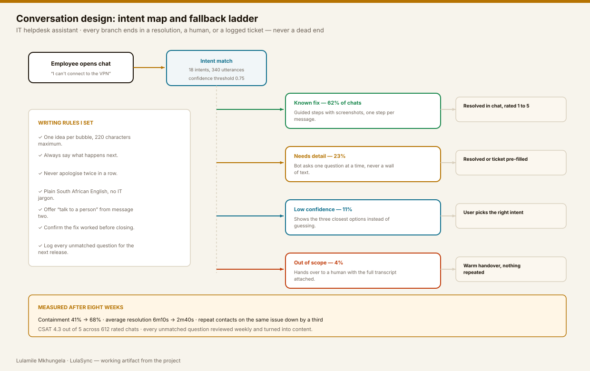
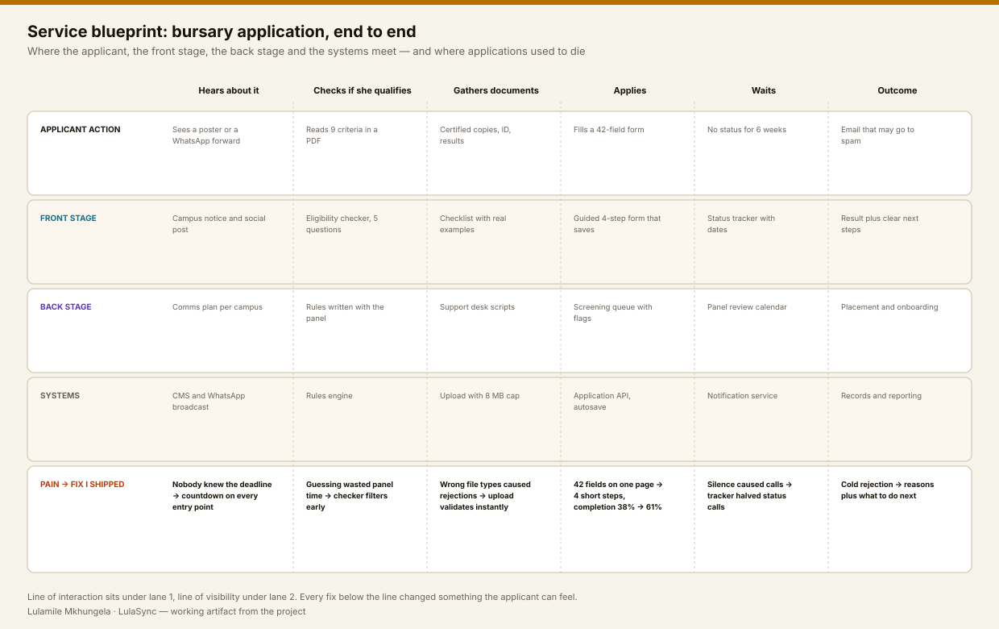
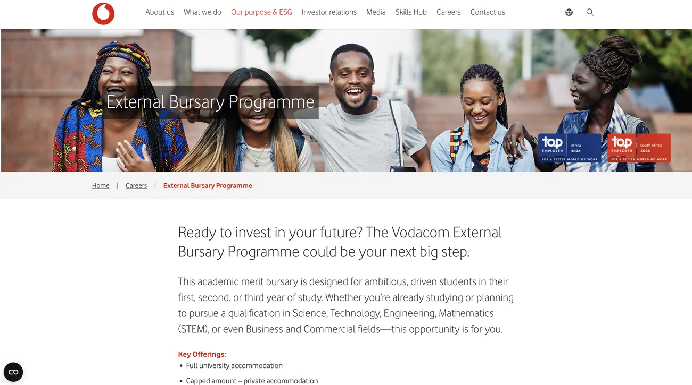
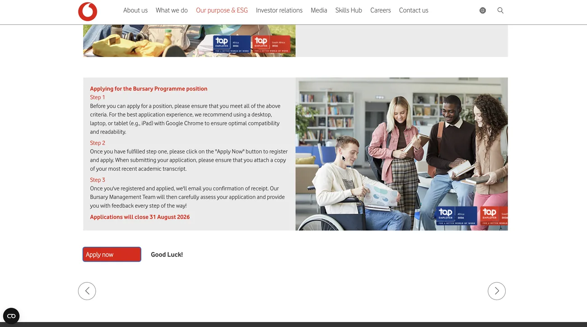
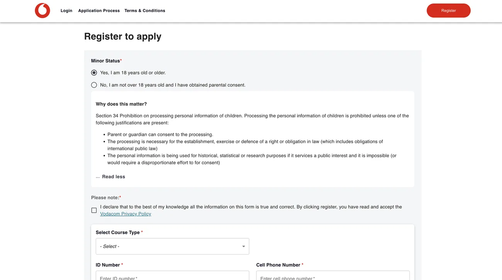

Case study 02 · Conversational UX & service design
A BOT THAT ANSWERS,
A FORM THAT FINISHES.
Two connected problems in one service: an IT assistant that opened with an empty room, and a bursary application that six out of ten students abandoned. I redesigned the conversation and the journey around it, then measured both.
01
AN EMPTY CHAT WINDOW
IS A DESIGN DECISION TOO.
The original assistant did three things wrong before a single word was typed: it opened with nothing to do, it apologised for existing, and it had no visible way to reach a person. People typed one question, got a generic reply, and went back to logging a ticket.
The bursary side had the mirror problem. The information existed — in a nine-point PDF and a forty-two field form on one page. Students started, hit a document they did not have, and never came back.
Before
- Empty chat, no suggestions, no scope
- “I am not a real person… yet :)” as the opener
- No visible handover to a human
- 42 fields on a single page, no save
- Six weeks of silence after applying
After
- Opens with the three most common jobs
- Says what it can and cannot do, in one line
- “Talk to a person” from the second message
- Four short steps, autosaved, resumable
- Status tracker with real dates

02
I READ SIX MONTHS OF TICKETS
BEFORE WRITING ONE LINE OF DIALOGUE.
Conversation design without a corpus is fiction. The tickets were the corpus: what people ask, in their own words, at the moment they are stuck.
2 400 tickets, tagged
Sorted into 18 intents. Password resets, VPN and access requests made up 41% of the total volume.
340 real utterances
I kept people's actual phrasing — “my laptop won't see the network” — instead of inventing clean queries.
Wizard of Oz, 8 sessions
I played the bot over chat while a colleague observed. Cheapest way to find out where a script breaks.
Diary study, 11 students
Two weeks of the bursary application in their own words, including the parts that happen offline.
03
EVERY BRANCH ENDS SOMEWHERE.
The rule I designed to: a conversation may end in a fix, a human, or a logged ticket — never in a shrug. That single constraint produced the fallback ladder below.

Set expectations in line one
“I can help with password, VPN, access and software installs.” Scope stated up front removes half the failure cases.
One step per message
A four-step fix arrives as four messages with a check-in between, not as a paragraph nobody reads on a phone.
Confirm before closing
“Did that work?” is the difference between a resolved chat and a repeat contact two hours later.
Log every miss
Unmatched questions go to a weekly review. Twelve of them became new content in the first month.
04
TRY THE REDESIGNED CONVERSATION.
A working rebuild of the tested script, coded in HTML and JavaScript. Pick a question and follow it through — including the branch where the bot cannot help.
Design note. Choose an option on the left. Watch how each reply names the next step and keeps the route to a human visible.
What to notice
Typing indicators are capped at 900 ms — long enough to feel considered, short enough not to feel slow. Every message stays under 220 characters. The handover carries the transcript, so nobody has to repeat themselves.
05
THE CHAT WAS ONLY THE VISIBLE PART.
Fixing the assistant without fixing the service around it would have moved the frustration, not removed it. I mapped the whole bursary journey — front stage, back stage and systems — and marked every point where an application used to die.

The journey as the applicant actually meets it
Four real screens from the live service, in the order a student hits them. Each one is a decision that either keeps her moving or quietly loses her.




The pattern behind all four
Every screen answers the question the applicant is holding at that moment, in the order she holds it: am I eligible, what will you need from me, why are you asking this, and what happens next. Service design is mostly that — putting the answer where the question is.
06
42 FIELDS ON ONE PAGE
BECAME 4 STEPS THAT SAVE THEMSELVES.
The original form asked everything at once, validated nothing until submit, and lost the lot if the connection dropped. For a student on mobile data, that is not a form, it is a gamble.
Step 2 of 4 · Your studies
University of Johannesburg
Pre-filled from your matric results upload.BSc Computer Science
Funded fields are marked with a star in the list.You can close this and come back. Nothing is lost.
Completion went from 38% to 61% after this change alone.
07
MEASURED AFTER EIGHT WEEKS.
The number I am proudest of is the third one. Containment can be gamed by making it hard to reach a human. Repeat contacts cannot — they only fall when the answer was actually right.
08
WHAT I WOULD DO DIFFERENTLY.
Write the fallbacks first
I designed the happy paths first and retrofitted the failure branches. Next time the fallback ladder is the first artefact, because that is where trust is won or lost.
Test in isiZulu and Sesotho earlier
We launched in English with plain-language rules. Multilingual testing came later than it should have for a South African user base.
Give the support team an editor
Copy changes needed a developer for the first month. Handing the support lead a content editor removed the bottleneck and improved the answers.
GOT A FLOW PEOPLE ABANDON
HALFWAY THROUGH?
Send me the funnel and the two questions your support team answers most. That is usually enough to spot where the trust breaks.